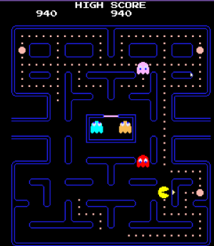
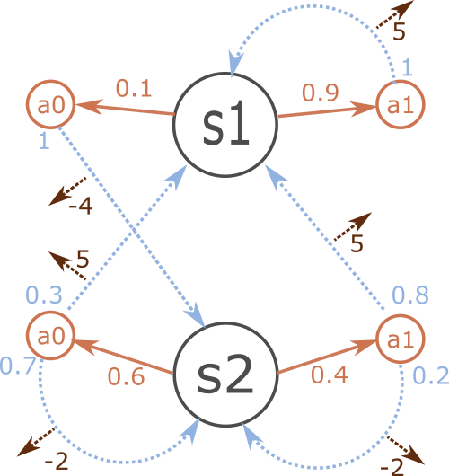
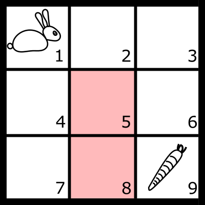
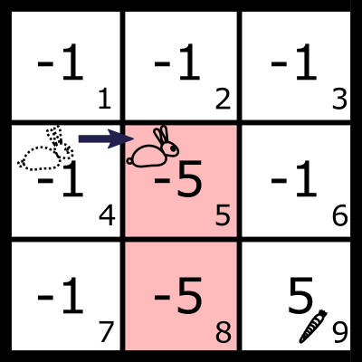
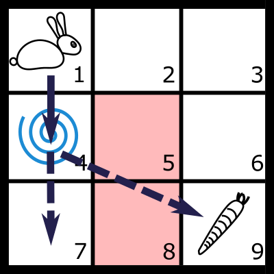
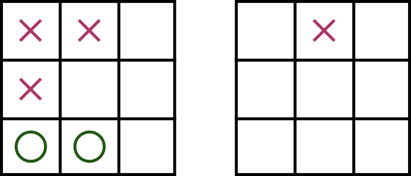

Machine learning is broadly defined as how to
Label: cat.
Cat picture credit:© Marie-Lan Nguyen
An example of k-mean clustering on the Iris dataset, with poor performances.


The model has the Markov property. The state and rewards transition probabilities only depend on the current state, and not the states before.

Example adapted from Mathematical foundations of reinforcement learning by Shiyu Zhao.


This is what we will call the model. Can be difficult to know in advance. Imagine for example if the teleporter chances are unknown.
Jazz’s goal is to find a policy that maximizes his return.
\[ v_\pi(s) = E[G_t|S_t = s] = E[R_{t+1} + \gamma R_{t+2} + \dots | S_t = s] \]

It is circle player turn, which state is the most valuable, left of right?
A recursive equation between the state values
\[\begin{align} v_\pi(s) &= \sum_{a\in\mathcal{A}, r\in\mathcal{R} , s\in\mathcal{S}}\pi(a|s)p(s',r|s,a)(r+\gamma v_\pi(s'))\\ &= \sum_{a\in\mathcal{A}}\pi(a|s)\sum_{r\in\mathcal{R} , s\in\mathcal{S}}p(s',r|s,a)(r+\gamma v_\pi(s'))\\ &= \sum_{a\in\mathcal{A}}\pi(a|s)q_\pi(a,s) \end{align}\]
\(q_\pi(a,s)\) is called the action value. Here is the idea:
This is called policy iteration.
Initial policy is to chose an action among possible actions randomly, and uniformly. The state values are here. What should be the new policy.
Appears last
Appears first
Appears second